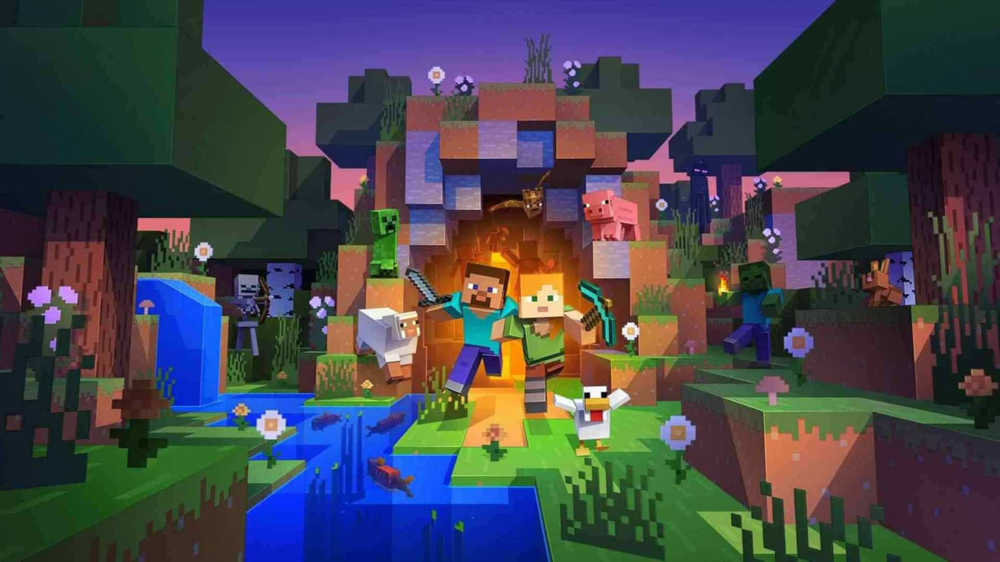
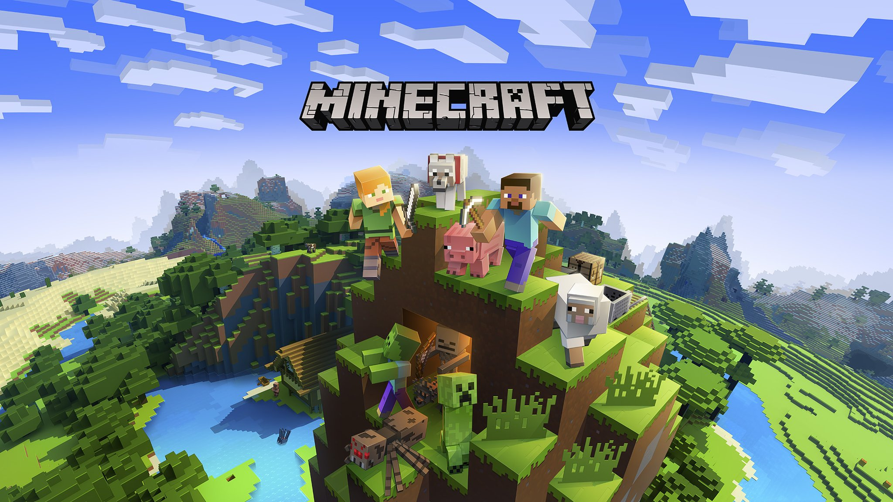

Jogo de construção e sobrevivência

Minecraft é um jogo de construção e sobrevivência desenvolvido pela Mojang Studios. O jogo permite aos jogadores criar e destruir diferentes tipos de blocos em um mundo tridimensional gerado proceduralmente.
O jogo foi lançado oficialmente em 2011 e desde então se tornou um dos jogos mais populares do mundo, com milhões de jogadores ativos em todo o mundo. Minecraft é conhecido por sua jogabilidade criativa e pela liberdade que oferece aos jogadores para construir e explorar seu próprio mundo virtual.
Além disso, Minecraft tem uma comunidade ativa de jogadores e modders que criam conteúdo adicional para o jogo, como mods, mapas personalizados e servidores multiplayer. O jogo está disponível em várias plataformas, incluindo PC, consoles e dispositivos móveis.
Em resumo, Minecraft é um jogo de construção e sobrevivência que oferece aos jogadores a oportunidade de criar e explorar seu próprio mundo virtual, e tem uma comunidade ativa que contribui para o seu sucesso contínuo.
- Desenvolvedor do jogo"Minecraft é um jogo que permite que os jogadores criem e explorem seu próprio mundo virtual de forma livre e criativa."

Para mais informações sobre o Minecraft, visite o site oficial do jogo. Site oficial: https://www.minecraft.net/pt-br